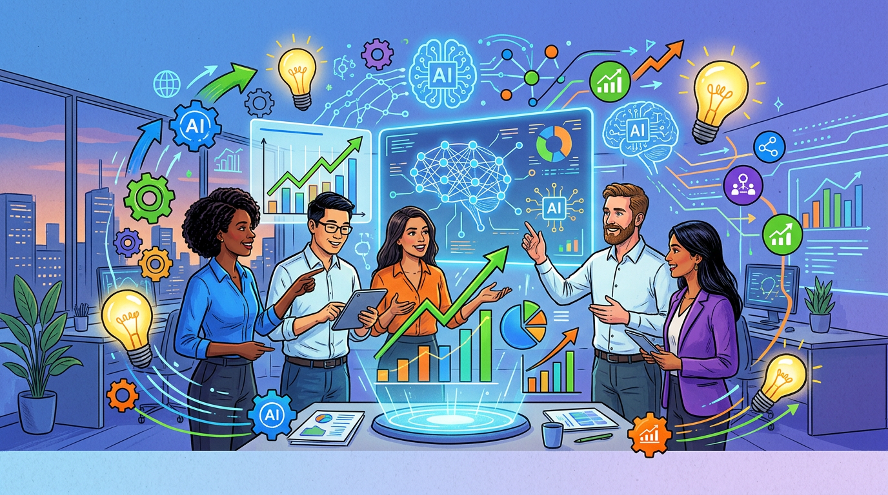
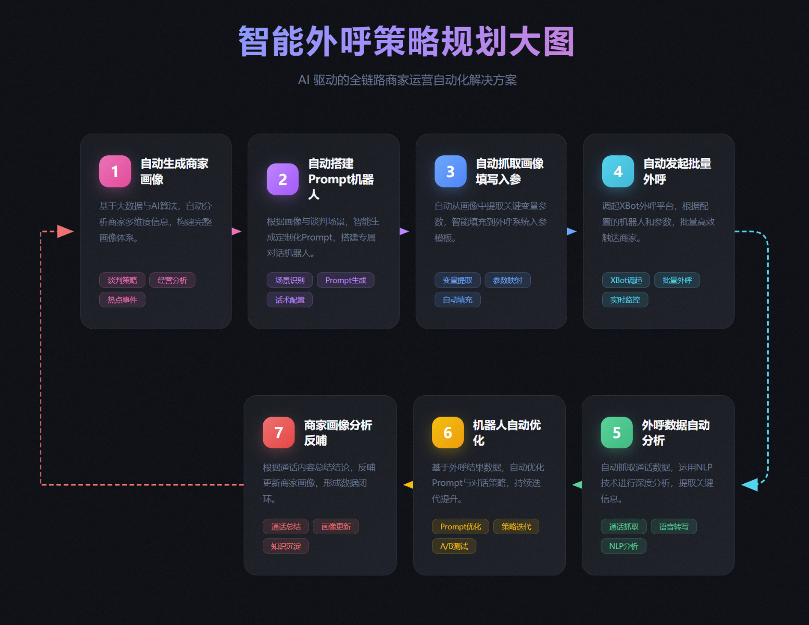

AI 驱动的业务创新
业务运营中心
3 月 AI 提效总结
20个AI应用项目全面落地，助力业务效率提升

项目类型分布
合计 20 个
AI 助理/智能体
智能客服、培训助手
5
数据分析/跑数
数据查询、报表分析
5
内容生成/文档
PPT、方案、周报
4
外呼/自动化
外呼策略、自动化操作
3
监控/质检
数据监控、质量检查
3
培训组
4 个项目
培训赋能
培训 AI 助理
项目描述
将大住宿业务培训现有知识输送给AI进行学习，承担日常答疑、扩展行业知识、新人landing辅导、陪伴成长的任务
进展情况
25年12月末上线，仅针对入职一年内的BD同学336名进行内测推荐；截止26年3月24日，对话总量 1051次，对话人数104人；人均对话次数：10次；日均对话次数：15次
成果展示


商家赋能
热点商家 AI 助理
项目描述
商家输入想了解的城市，即可一键查询城市旅行热度，未来3个月城市旅游热点（演唱会、赛事、文旅活动等），同时给出酒店价格与库存、营销的建议
进展情况
完成内部测试与发布，计划与飞猪商家EBooking平台联动，在工作台&公众号向商家推广使用
成果展示


培训创新
BD培训 AI 助手
项目描述
通过AI搭建剧本杀培训方案《破局·酒店风云》沉浸式商战剧本杀培训项目，完成页面开发和线上部署
进展情况
通过校验及业务调研，逐步形成完善方案
成果展示
项目文档：《破局·酒店风云》沉浸式商战剧本杀培训项目方案
查看详细方案 →
查看详细方案 →
培训创新
AI 交互式模拟舱
项目描述
通过AI（qoder）设计线上交互式培训，创新培训形式，提升学员参与度和学习效果
进展情况
已完成网页设计，通过AI能力实现培训产品落地
成果展示

经营效能
11 个项目
自动化
BD 问答 skill 自动化代操作
项目描述
随问随答高频问题提炼写成 skill 自动化查询代操作，实现智能客服自动化
进展情况
目前已完成全流程验证，操作成功率 100%。该项技能上线后，预计可将此类工单的单均处理时长缩减 60% 以上
成果展示
演示视频：3月18日测试skills
查看视频演示 →
查看视频演示 →
方案生成
AI 清明服务方案
项目描述
利用AI完成清明方案过往信息和预测信息同步治理，3-5分钟把之前可能需要几个小时收集的信息很迅速的做成方案
进展情况
利用AI完成清明方案过往信息和预测信息同步治理
成果展示

智能外呼
AI 自主决策外呼策略
项目描述
利用AI完成商家画像自动生成-自动发起外呼-自动分析-自优化-反哺闭环
进展情况
初步跑通【搭建酒店画像】-【定位整合外呼任务】-【自动搭建极简画布机器人】-【外呼收集谈判结果】-【自动分析&自优化】-【迭代酒店画像&任务】的外呼作业闭环
成果展示

智能质检
AI 外呼分析质检 skill
项目描述
AI外呼后数据清洗、数据分析、AI准确率质检skills，实现外呼后复盘迭代全流程
进展情况
利用AI实现外呼后复盘迭代全流程：外呼数据明细清洗-数据汇总分析-通话内容质检-谈判策略优化全流程闭环
成果展示

数据监控
AI 热点监控
项目描述
热点日期实时数据推送，让AI定时推送当前的热点服务数据，包括分业务线、分酒店数据相关
进展情况
可直接发送到钉钉消息推送到相关的同学，帮助高效看到目前数据情况
成果展示

数据查询
AI 跑数
项目描述
自然语言取ODPS底表数据，FBI AI自然语言取ODPS底表数据
进展情况
输入自然语言即可从ODPS底表取数，无需编写SQL
成果展示


内容生成
PPT-Skill
项目描述
AI做PPT，并生成skill，自动化生成专业美观的演示文稿
进展情况
写PPT只需要编辑文档就可以生成美观的PPT
成果展示

代码生成
AI 写 SQL 跑底表
项目描述
拥有自己的小代码库，节省繁琐的问询，通过AI写SQL跑出想要但报表未体现的数据
进展情况
还能找AI核验技术早就不记得的业务逻辑
成果展示

内容运营
AI 运营微信公众号
项目描述
AI进行对标账号分析-内容拆解-结合友商内容和市场热点建立自己的选题库-建立自己的公众号排版模版-输出内容
进展情况
全流程AI辅助公众号运营
成果展示

数据分析
AI 数据分析
项目描述
使用FBI进行数据汇总分析，通过描述所需要的字段、要求等，让AI协助做数据统计和分析
进展情况
通过描述要求、筛选条件等逻辑，可以完成相对复杂的数据统计和计算
成果展示

报告生成
AI 周报
项目描述
运营周报梳理，整合核心数据、关键策略进展等重点，生成周报内容
进展情况
写的人更方便梳理自己的结构，阅读者能快速找到重点、要点
成果展示

智能分析
AI 提取标杆商家画像
项目描述
AI通过数据能快速筛选出优秀的门店，并做成标杆案例海报
进展情况
自动化生成标杆商家案例
成果展示

供应链
2 个项目
数据播报
数据播报 AI
项目描述
供应链&特金&政府券日播报，利用AI分析对指定的报表进行内容解读、指标趋势分析、数据异动分析
进展情况
在项目对接群内自动播报，多协作方随时随地知晓数据进展
成果展示


材料生成
AI 制作商家 SK
项目描述
通过AI制作营销升级-EBK对商材料，利用AI生成数据安全且商家易懂的宣导材料
进展情况
将原本6页的详尽报告精准浓缩为一页核心精华
成果展示

流程组
2 个项目
数据看板
AI 写 SQL 搭看板
项目描述
0基础AI写代码搭建拜访FBI看板，接手长期未维护的FBI，人工梳理底表逻辑后，让AI帮忙写SQL
进展情况
跑出数据集，完成FBI看板搭建
成果展示

过程管理
AI 拜访分析
项目描述
拜访跟进日维度推送更新，已完成拜访管理，AI日维度更新数据推送分析
进展情况
基于Qoderwork生成日报
成果展示